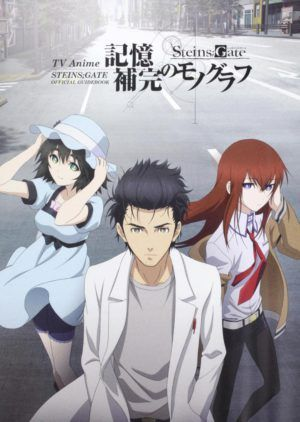

Sinopsis:
Los hermanos Edward y Alphonse Elric buscan la Piedra Filosofal tras un intento fallido de alquimia humana que dejó a Edward sin extremidades y a Al atrapado en una armadura.
Director: Yasuhiro Irie
Año: 2009
Género: Acción, Fantasía, Drama
Episodios: 64
Trailer:
Soundtrack:
TOP 2 - Steins;Gate

Sinopsis:
Rintaro Okabe descubre accidentalmente la forma de enviar mensajes al pasado, desencadenando una serie de efectos mariposa que alterarán su destino y el de sus amigos.
Director: Hiroshi Hamasaki / Takuya Satō
Año: 2011
Género: Ciencia Ficción, Thriller
Episodios: 24 + OVA
Trailer:
Soundtrack:
TOP 3 - Shingeki no Kyojin (Attack on Titan)
Sinopsis:
En un mundo asediado por gigantes humanoides, Eren Yeager y sus amigos se unen al ejército para combatir y descubrir la verdad detrás de los titanes.
Director: Tetsurō Araki (Temporadas iniciales)
Año: 2013
Género: Acción, Drama, Fantasía Oscura
Episodios: 94 (en total)
Trailer:
Soundtrack:
TOP 4 - Monster
Sinopsis:
El doctor Tenma se ve envuelto en una serie de asesinatos después de salvar la vida de un niño que se convierte en un psicópata serial.
Director: Masayuki Kojima
Año: 2004
Género: Suspenso, Psicológico, Crimen
Episodios: 74
Trailer:
Soundtrack:
TOP 5 - Mob Psycho 100
Sinopsis:
Shigeo “Mob” Kageyama es un joven con poderes psíquicos devastadores, pero lo único que quiere es vivir una vida normal mientras controla sus emociones.